Partie III : Problème à N corps
On s'intéresse à présent à la dynamique d'un système de corps massifs en interaction gravitationnelle. Dans
la suite, les corps considérés sont assimilés à des points matériels
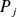
de masses
où
,
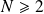
étant un entier positif donné. Le mouvement de ces points est étudié dans un référentiel galiléen muni d'une base orthonormée. L'interaction entre deux corps
 et
et
 est modélisée par la force gravitationnelle. L'action exercée par le corps
sur le corps
est décrite par la force
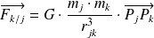
où
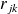
est la distance séparant les corps
et
(
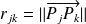
) et
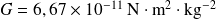
la constante de gravitation universelle.
est modélisée par la force gravitationnelle. L'action exercée par le corps
sur le corps
est décrite par la force
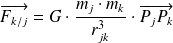
où
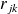
est la distance séparant les corps
et
(
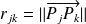
) et
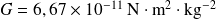
la constante de gravitation universelle.
À tout instant avec , chaque corps de masse est repéré par ses coordonnées cartésiennes 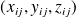 et les composantes de son vecteur vitesse 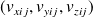 dans le référentiel de référence.
Trois listes sont utilisées pour représenter ce système en python :
masse conserve les masses de chaque corps : masse[j] = ;
position contient les positions successives de chaque corps : position[i][j] = 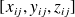 ;
vitesse mémorise les vitesses successives de chaque corps : vitesse[i][j] = 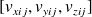 .
L'objet de la suite du problème est de construire ces listes en mettant en œuvre l'algorithme de Verlet.
Question
Exprimer la force 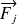 exercée sur le corps par l'ensemble des autres corps 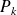 , avec 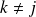 .
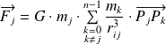
Question
Écrire une fonction python force2(m1, p1, m2, p2) qui prend en paramètre les masses (m1 et m2 en kilogrammes) et les positions (p1 et p2, sous forme de listes de trois coordonnées cartésiennes en mètres) de deux corps 1 et 2 et qui renvoie la valeur de la force exercée par le corps 2 sur le corps 1, sous la forme d'une liste à trois éléments représentant les composantes de la force dans la base de référence, en newtons.
Il est possible de choisir d'écrire plus d'une fonction pour réaliser ce calcul.
import fonctions_utilitaires as ut
G = 6.67e-11 # Constante de gravitation universelle
#def distance(p1, p2):
'''renvoie la distance en metres entre p1 et p2 entres sous formede listes de trois coordonnees cartesiennes en metres.'''return pow(sum([pow(a - b, 2) for a, b in zip(p1, p2)]), 0.5)
#def force2(m1, p1, m2, p2):
'''renvoie la valeur de la force exercee par le corps 2 sur le corps 1,sous la forme d'une liste à trois elements representant les composantesde la force dans la base de reference, en newtons.'''return ut.smul(G * m1 * m2 / pow(distance(p1, p2), 3), vdiff(p2, p1))
Question
Vérifier la fonction précédente en retrouvant la valeur de l'accélération de la pesanteur au niveau de la mer. En déduire cette valeur au sommet de l'Everest.
La Terre a une masse de 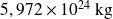 et un rayon de .
L’Everest a une altitude de .
rT = 6371e3 # Rayon de la Terre en m
mT = 5.972e24 # Masse de la Terre en kg
pT = [0] * 3 # Position de la Terre
pO = [rT, 0, 0] # Position d'un objet terrestre a la surface
mO = 1 # Masse de l'objet en kg
print('distance :', distance(pT, pO))
print('acceleration de la pesanteur au niveau de la mer :', \
force2(mO, pO, mT, pT)[0])
print('acceleration de la pesanteur au sommet de l\'Everest :', \
force2(mO, ut.vsom(pO, [8848, 0, 0]), mT, pT)[0])
La console affiche les résultats suivants.
distance : 6371000.0
acceleration de la pesanteur au niveau de la mer : -9.813646787366263
acceleration de la pesanteur au sommet de l'Everest : -9.786445219193146
Question
Écrire une fonction forceN(j, m, pos) qui prend en paramètre l'indice
d'un corps, la liste des masses des
 corps du système étudié ainsi que la liste de leurs positions et qui renvoie
, la force exercée par tous les autres corps sur le corps
, sous la forme d'une liste de ses trois composantes cartésiennes.
corps du système étudié ainsi que la liste de leurs positions et qui renvoie
, la force exercée par tous les autres corps sur le corps
, sous la forme d'une liste de ses trois composantes cartésiennes.
def forceN(j, m, pos):
'''renvoie la force exercee par tous les autres corps sur le corps j,sous la forme d'une liste de ses trois composantes cartesiennes.'''res = [0] * 3
for k in range(len(m)):
if k != j:
res = vsom(res, force2(m[j], pos[j], m[k], pos[k]))
return res
Question
Vérifier la fonction précédente en calculant l'influence maximale de la Lune sur l'accélération de la pesanteur à la surface de la mer.
La Lune a une masse de 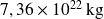 et sa distance minimale avec la Terre, son périgée, est de .
rL = 356410e3 # Perigee de la Lune par rapport à la Terre en m
mL = 7.36e22 # Masse de la Lune en kg
pL = [rL, 0, 0]
m = [mT, mO, mL]
pos = [pT, pO, pL]
print('''acceleration de la pesanteur au niveau de la mer
avec la Lune au plus pres :''', forceN(1, m, pos)[0])
La console affiche les résultats suivants.
acceleration de la pesanteur au niveau de la mer
avec la Lune au plus pres : -9.813606721846668
Question
Expliciter la structure et la signification de position[i] et vitesse[i].
position[i] est la liste des positions de tous les corps
à l'instant
.
vitesse[i] est la liste des vitesses de tous les corps
à l'instant
.
Question
Écrire une fonction pos_suiv(m, pos, vit, h) qui prend en paramètres la liste des masses des
corps du système étudié (en kilogrammes), la liste de leurs positions (en mètres) à l'instant
, la liste de leurs vitesses (en mètres par seconde) au même instant et le pas d'intégration
 (en secondes) et qui renvoie la liste des positions des
corps à l'instant
calculées en utilisant le schéma de Verlet.
(en secondes) et qui renvoie la liste des positions des
corps à l'instant
calculées en utilisant le schéma de Verlet.
L'application du principe fondamental de la dynamique au corps
donne
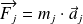
où
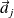
est l'accélération du corps
, donc la dérivée seconde de sa position
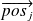
.
Pour faire le lien avec la partie II du sujet qui met en place le schéma de Verlet, il faut poser :
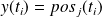 , c'est à dire = pos[i][j] ;
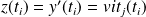 , c'est à dire 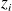 = vit[i][j] ;
la fonction
 telle que
est alors
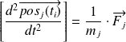
.
telle que
est alors
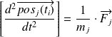
.
Le schéma numérique est alors pour le corps
:
position[i + 1][j] = position[i][j] + h * vitesse[i][j] + (pow(h, 2) / 2) * (1 / m[j]) * forceN(j, m, position[i])
def pos_suiv(m, pos, vit, h):
'''renvoie la liste des positions des N corps a l'instant t_{i + 1}calculees en utilisant le schema de Verlet.''' res = []for j in range(len(m)):
res.append(\
ut.vsom(pos[j], \
ut.vsom(\
ut.smul(h, vit[j]), \
ut.smul(pow(h, 2) / 2 / m[j], forceN(j, m, pos)))))
return res
Le 20 mars 2015 a eu lieu la dernière éclipse de Soleil observable en France. Malheureusement, ce jour-là à Nantes, le temps était très couvert et nous n'avions pas pu l'observer de visu.
Cependant, cette date nous permet de poser une situation initiale pour tester nos fonctions.
Question
Exprimer les variables m, pos et vit pour les astres Soleil Terre Lune à cette date particulière.
Astre | Masse en kg | Distance moyenne de référence en unité astronomique | Vitesse moyenne de référence en km/s |
Soleil | 1.99e+30 | ||
Terre | 5.97e+24 |
| 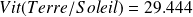 |
Lune | 7.36e+22 | 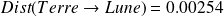 | 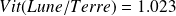 |
Toutes ces données sont aisément disponibles sur internet.
Lors d'une éclipse de Lune, l'alignement est Soleil Lune Terre.
Pos_ini = [[0, 0, 0], [Dist_Terre_Soleil, 0, 0], \
[Dist_Terre_Soleil - Dist_Lune_Terre, 0, 0]]
Vit_ini = [[0, 0, 0], [0, Vit_Terre_Soleil, 0], \
[0, Vit_Terre_Soleil - Vit_Lune_Terre, 0]]
Question
Tester votre fonction pos_suiv avec ces données initiales et un pas de temps correspondant à un jour terrestre.
Ne pas oublier de procéder aux conversions.
h = 24 * 3600
Pos_ini_m = [ut.smul(ua, Pos) for Pos in Pos_ini]
Vit_ini_ms = [ut.smul(km, Vit) for Vit in Vit_ini]
Pos1 = pos_suiv(Masses, Pos_ini_m, Vit_ini_ms, h)
Voici le résultat affiché par la console.
>>> Pos1
[[66.87495259558509, 0.0, 0.0], [149977854961.40826, 2543999999.99616, 0.0], [149607107672.92682, 2455612799.99616, 0.0]]
Question
Écrire une fonction etat_suiv(m, pos, vit, h) qui prend les mêmes paramètres que la fonction pos_suiv et qui renvoie la liste des positions (en mètres) et la liste des vitesses (en m/s) des
corps à l'instant
calculées en utilisant le schéma de Verlet.
Il faut utiliser la seconde relation de récurrence de Verlet :
vitesse[i+1][j] = vitesse[i][j] + (h / 2) * (1 / m[j]) * (forceN(j, m, pos[i]) + forceN(j, m, pos[i + 1]))
def etat_suiv(m, pos, vit, h):
'''renvoie la liste des positions (en metres) et la liste des vitesses(en m/s) des N corps à l'instant t_{i+1} calculees en utilisant le schemade Verlet.'''res_pos = pos_suiv(m, pos, vit, h)
res_vit = []for j in range(len(m)):
fj = forceN(j, m, pos)
res_vit.append(ut.vsom(vit[j], ut.smul(h / 2 / m[j], ut.vsom(\
fj, forceN(j, m, res_pos)))))
return res_pos, res_vit
Question
Toujours avec les conditions initiales du 20 mars 2015, tester sa fonction etat_suiv.
Le problème de conversion se pose toujours.
Pos_ini_m = [ut.smul(ua, Pos) for Pos in Pos_ini]
Vit_ini_ms = [ut.smul(km, Vit) for Vit in Vit_ini]
Pos2, Vit2 = etat_suiv(Masses, Pos_ini_m, Vit_ini_ms, delta_t)
La console affiche alors les résultats suivants.
>>> Pos2
[[66.87495259558509, 0.0, 0.0], [149977854961.40826, 2543999999.99616, 0.0], [149607107672.92682, 2455612799.99616, 0.0]]
>>> Vit2
[[0.0015479248360255524, 1.3122240320962045e-05, 0.0], [-512.5410633318083, 29439.783627117213, 0.0], [-278.53635326023317, 28444.7028810782, 0.0]]
Complément :
Le fichier ci-dessous contient les fonctions de cette partie et les tests.
Les questions suivantes traitent de la complexité des algorithmes. Elle est en 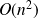 .